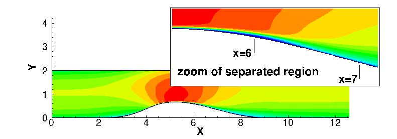

Public Access (formerly Langley Research Center)Turbulence Modeling Resource |
LES: 2-D Converging-Diverging Channel, Re=20580
Return to: Data from LES - Intro Page
Return to: Turbulence Modeling Resource Home PageThe data on this page were provided by Luiz Schiavo, William Wolf, and Joao Luiz Azevedo.
Compare this LES data with DNS data for the same configuration
(at different Reynolds number):
DNS: 2-D Converging-Diverging Channel, Re=12600.
This LES case is for 2-D separating flow over a converging-diverging channel
with Retau of approximately 950, Re=20580 (based on inlet conditions).
The LES was run using an incompressible code (MFLOPS3D), and has been documented in:

Some relevant information is given here, but the
interested reader is referred to the above publications for more details:
Long-time averaged LES data are provided below.
These results are from a grid with approximately 50.6 million grid points, covering a spanwise extent of Pi (3.14159...) with 256 cells in the
spanwise direction. The Nx and Ny directions were discretized with 1024 and 193 grid points, respectively.
Additional details about the LES grid and methodology can be found in the above
references.
To read/write CGNS files, (free) software
may be necessary if your pre/post-processing tools do not already handle it.
See: CGNS Website for details.
Return to: Data from LES - Intro Page
Page Curators: Christopher Rumsey,
Ethan Vogel,
Clark Pederson
Last Updated: 11/05/2021